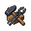

Selected recipe
Output and time from the snapshot
Authored sheets-v2 HTML using the sheet CSS. Compact figures illustrate header structure only; exact viewport geometry remains unrun in compactHeader.browser.assertions.ts. These are inert structural references, not rendered React or verified native parity. No server, script, wallet, or network call. Ellipses represent snapshot values.
Small header icons are existing kit art placeholders; the host supplies the living header. The host also owns the visible world, scrim, Back, focus and insets. No game balance values are invented.

Recipe selected
Output and time from the snapshot
Available stock / required stock
Shortfall opens Need-more
Source destination from the snapshot
Receipt before celebration
Server-owned collection
CHECK before another collection
Equipment workbench
Required level and ingredients
Server quote opens review
Make it your own
Availability and owned state
No inventory mutation in the sheet
Original request retained
The answer got lost. It is being checked; wait before starting another.
Recovery precedes refresh errors
KEEP stall
Product price from the server quote
Review before confirmation
SOL stall
SOL product price from the quote
Only inside the shared Seal
Your stall
Available owned stock
No network fee on this surface
Goods on your stall
TAKE BACK opens review
VIEW verified proceeds
Collection
INFO opens item details
Yield from the snapshot
GOT IT acknowledges auto-delivery
Timer never settles the result
Harvest records
Receipt and returned items
No reward rows exposed
A long status from the current authoritative snapshot
Controlled snapshot row · quantities and durations await server values.
Controlled snapshot row · quantities and durations await server values.
Controlled snapshot row · quantities and durations await server values.
Controlled snapshot row · quantities and durations await server values.
Controlled snapshot row · quantities and durations await server values.
Controlled snapshot row · quantities and durations await server values.
Controlled snapshot row · quantities and durations await server values.
Controlled snapshot row · quantities and durations await server values.
A long status from the current authoritative snapshot
Controlled snapshot row · quantities and durations await server values.
Controlled snapshot row · quantities and durations await server values.
Controlled snapshot row · quantities and durations await server values.
Controlled snapshot row · quantities and durations await server values.
Controlled snapshot row · quantities and durations await server values.
Controlled snapshot row · quantities and durations await server values.
Controlled snapshot row · quantities and durations await server values.
Controlled snapshot row · quantities and durations await server values.
A long status from the current authoritative snapshot
Controlled snapshot row · quantities and durations await server values.
Controlled snapshot row · quantities and durations await server values.
Controlled snapshot row · quantities and durations await server values.
Controlled snapshot row · quantities and durations await server values.
Controlled snapshot row · quantities and durations await server values.
Controlled snapshot row · quantities and durations await server values.
Controlled snapshot row · quantities and durations await server values.
Controlled snapshot row · quantities and durations await server values.